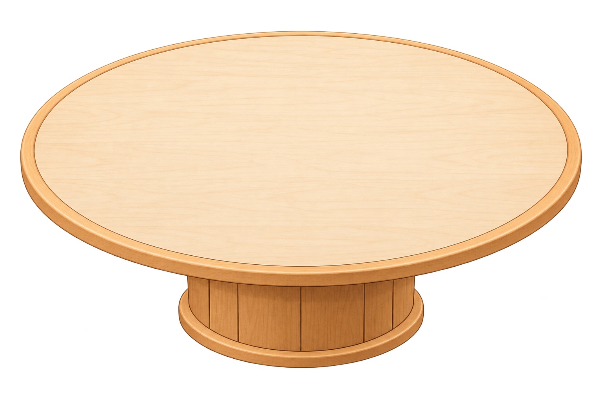

KANSHAN · ROUNDTABLE
把一个值得讨论的问题，交给多元观点。
刘看山会从知乎真实讨论中召集不同立场，让你理解答案背后的理由与边界。
Step 2 of 2
你想如何参与？
本场问题AI 编程工具普及后，初学者还应系统学习编程基础吗？
第 1 / 3 回合 · 立场陈述


主持人 · 刘看山
今天有三种值得认真讨论的声音，请大家先阐明立场。
KANSHAN · ROUNDTABLE
把分歧，聊明白。
一张圆桌，容得下不同的答案。
已点亮 3 个观点席 · 你将作为第四席参与